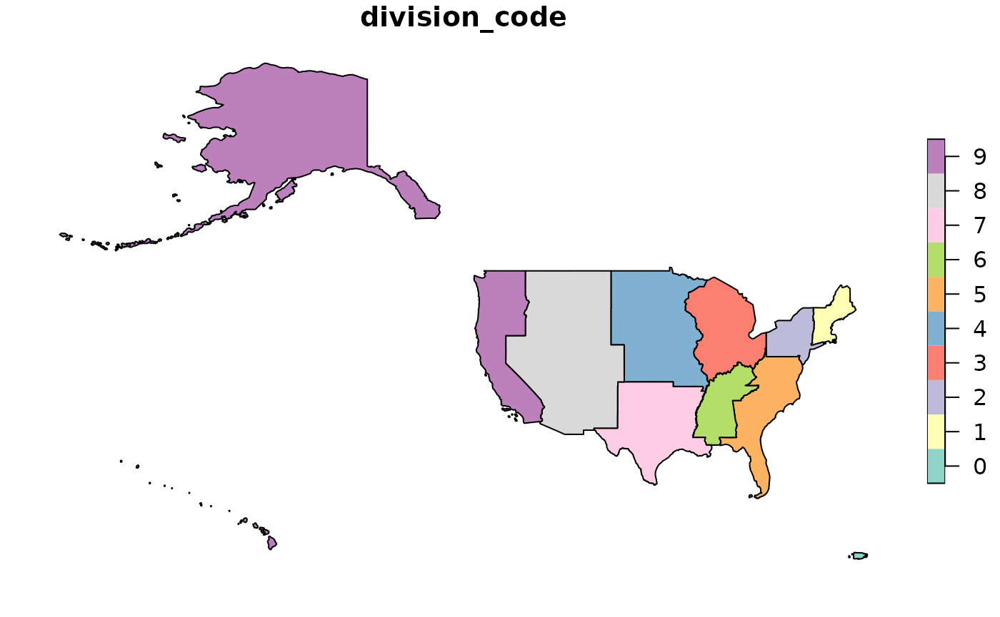

geodimension: Definition of Geographic Dimensions
Jose Samos (jsamos@ugr.es)
2020-11-26
Source:vignettes/geodimension.Rmd
geodimension.RmdIntroduction
The multidimensional data model was defined with the aim of
supporting data analysis. In multidimensional systems, data is
structured in facts and dimensions1. The geographic dimension plays a
fundamental role in multidimensional systems. Apart from the analysis
possibilities it offers, like any other dimension, it is very
interesting to have the possibility of representing the reports obtained
from multidimensional systems, using their geographic dimensions on a
map, or performing spatial analysis on them. This functionality is
supported by packages rolap
and geomultistar.
To define a geographic dimension in a star schema, we need a table with attributes corresponding to the levels of the dimension. Additionally, we will also need one or more geographic layers to represent the data using this dimension. We can obtain this data from available vector layers of geographic information. In simple cases, one layer is enough. We often need several layers related to each other. The relationships can be defined by common attribute values or can be inferred from the respective geographic information.
The main objective of this package is to support the definition of
geographic dimensions from layers of geographic information that can be
used in multidimensional systems. In particular, through packages rolap
and geomultistar.
The rest of this document is structured as follows: First, an illustrative example of how the package works is developed. Then, the document ends with conclusions.
An illustrative example
Suppose we have a multidimensional design on US data and the geographic dimension is defined at the place level. For each place we have its name and the code of the state in which it is located. It would be interesting to have other levels of detail in this dimension to be able to perform roll-up operations.
With this objective, we look for layers of geographic information. In
United States Census Bureau we find
layers at various levels of detail, including place,
county and state. Furthermore we find the
relationships in table form between division, region
and country. For this example we obtain them from the package
itself (we could read them from a GeoPackage or in any other
format using the sf
package).
library(geodimension)
layer_us_place <- gd_us |>
get_level_layer("place")
layer_us_county <-
dplyr::inner_join(
get_level_data_geo(gd_us, "county"),
get_level_layer(gd_us, "county"),
by = c("geoid", "statefp", "name", "type")
) |>
sf::st_as_sf()
layer_us_state <-
dplyr::inner_join(
get_level_data_geo(gd_us, "state"),
get_level_layer(gd_us, "state"),
by = c("statefp", "division", "region", "stusps", "name")
) |>
sf::st_as_sf()The content of variable us_division is shown below.
| division_code | division_name | region_code | region_name | country |
|---|---|---|---|---|
| 1 | New England | 1 | Northeast | USA |
| 2 | Middle Atlantic | 1 | Northeast | USA |
| 3 | East North Central | 2 | Midwest | USA |
| 4 | West North Central | 2 | Midwest | USA |
| 5 | South Atlantic | 3 | South | USA |
| 6 | East South Central | 3 | South | USA |
| 7 | West South Central | 3 | South | USA |
| 8 | Mountain | 4 | West | USA |
| 9 | Pacific | 4 | West | USA |
| 0 | Puerto Rico | 9 | Puerto Rico | USA |
The layers and the table are related to each other. In some cases
they have attributes in common, in others, although there is a
relationship, it may not be explicitly defined. We can use
geodimension to support the definition of these
relationships. Once defined, it will also offer us support to exploit
them and obtain information from them.
Thus, three phases can be distinguished:
Definition of levels.
Definition of relationships.
Obtaining information.
Definition of levels
In the package, each conceptual level of the geographical dimension
is called geolevel. To define a geolevel, we
need a layer and the set of attributes that make up the layer’s key
(which uniquely identify each of its instances).
We can previously check if a set of attributes form a key of the
layer using the check_key() function.
names(layer_us_place)
#> [1] "geoid" "statefp" "county_geoid" "name" "type"
#> [6] "geom"
check_key(layer_us_place, key = c("name", "statefp"))
#> [1] FALSE
check_key(layer_us_place, key = "geoid")
#> [1] TRUEWe might expect the place name (name) and state code
(statefp) to be sufficient to identify a place, however,
they are not. We check that the geoid field is a valid key,
therefore, it will be the one we use to define the
geolevel.
We can check the geometry that is considered for the definition of
the level by means of the get_geometry() function (it
simplifies the types into point, line and
polygon). In addition, we give each level a name to be able to
refer to it, as shown below.
get_geometry(layer_us_place)
#> [1] "point"
place <-
geolevel(name = "place",
layer = layer_us_place,
key = "geoid")For county it is the same as for place, the
name and the code of the state do not compose a valid key. In this case,
the geometry is polygon. Additionally, a layer with another geometry can
be associated using the add_geometry() function. Since the
layer includes longitude and latitude, we can generate a geographic
layer of points using the coordinates_to_geometry()
function.
check_key(layer_us_county, key = c("name", "statefp"))
#> [1] FALSE
check_key(layer_us_county, key = "geoid")
#> [1] TRUE
get_geometry(layer_us_county)
#> [1] "polygon"
county <-
geolevel(name = "county",
layer = layer_us_county,
key = c("geoid")) |>
add_geometry(coordinates_to_geometry(layer_us_county))For state the situation is similar to the previous cases.
us_state_point <-
coordinates_to_geometry(layer_us_state,
lon_lat = c("intptlon", "intptlat"))
state <-
geolevel(name = "state",
layer = layer_us_state,
key = "statefp") |>
add_geometry(layer = us_state_point)For both county and state, fields with longitude
and latitude were available. If we only have the polygon
geometry, we can obtain the point geometry using the
complete_point_geometry() function.
For the rest of the levels, we do not have a layer with specific geographic information, but we can obtain it from the previous layers. Below is only the definition of the levels.
division <-
geolevel(
name = "division",
layer = us_division,
attributes = c("country", "region_code", "division_name"),
key = "division_code"
) |>
add_geometry(layer = layer_us_state,
layer_key = "division") |>
complete_point_geometry()
region <-
geolevel(
name = "region",
layer = us_division,
attributes = c("country", "region_name"),
key = "region_code"
) |>
add_geometry(layer = layer_us_state,
layer_key = "region") |>
complete_point_geometry()For division and region, we define the level from
the data table. Using the add_geometry() function, we add a
layer of geographic information obtained from a finer granularity level
of detail, which contains some field that relates them. Finally, we
obtain the point type geometry from the previously defined
polygon geometry.
country <-
geolevel(
name = "country",
layer = get_level_layer(region),
attributes = "country",
key = "country"
) |>
complete_point_geometry()For country, since the state layer does not contain any
field that directly relates to it, using the
get_level_layer() function, we can obtain a new layer from
any of the previously defined levels.
Once the levels are defined, then we will define the dimension and the relationships between the levels.
Definition of relationships
To define a geodimension, we give it a name and start
from any geolevel. If we want the names to follow the snake
case criteria, we can indicate this using the
snake_case = TRUE parameter and the conversion will be
performed automatically for all operations. Next, we add the rest of the
geolevels in any order.
gd <-
geodimension(name = "gd_us",
level = region,
snake_case = TRUE) |>
add_level(division) |>
add_level(state) |>
add_level(country) |>
add_level(place) |>
add_level(county)Next, we can define the relationships that we want to consider between the levels. In a relationship there are two parts, the lower level and the upper level. To define the relationships, the following points must be taken into account:
There are no restrictions on the relationships we define, as long as the relationship can be established.
It is only necessary to define direct relationships (from them, indirect ones are derived).
Relationships can be defined using attributes with common values between the levels or through geographic relationships between their instances.
If we want to reference the upper level through attributes, these must form a valid key for the level (it does not necessarily have to be the key that was indicated when defining it, this is used by default).
To define a relationship using geographic properties, the upper level must be of type polygon.
The relationships between state, region, division and country are defined below.
gd <- gd |>
relate_levels(
lower_level_name = "state",
lower_level_attributes = "division",
upper_level_name = "division"
) |>
relate_levels(
lower_level_name = "division",
lower_level_attributes = "region_code",
upper_level_name = "region"
) |>
relate_levels(
lower_level_name = "region",
lower_level_attributes = "country",
upper_level_name = "country"
)The relationship between state and division is
defined by a state attribute (division) that
matches the division key. In the same way, the relationships
between division and region, and region and
country are defined.
In addition to these relationships there is a relationship between place and state and also between county and state. In both cases it can be defined by attributes.
gd <- gd |>
relate_levels(
lower_level_name = "place",
lower_level_attributes = "county_geoid",
upper_level_name = "county"
) |>
relate_levels(
lower_level_name = "county",
lower_level_attributes = "statefp",
upper_level_name = "state"
)In this case, we have attributes to establish the relationships. In
some cases, we can resort to the geographical relationships that exist
between the levels. For example, to relate place and
county, using the relate_levels() function with
the parameter by_geography = TRUE, a field is created at
the lowest level that reflects the geographical relationship
obtained.
gd_2 <- gd |>
relate_levels(lower_level_name = "place",
upper_level_name = "county",
by_geography = TRUE)We can check if all the instances have been related using the
get_unrelated_instances() function:
nrow(get_unrelated_instances(gd_2,
lower_level_name = "place",
upper_level_name = "county"))
#> [1] 0Since there are no unrelated instances, each instance of place has been linked to the county whose boundaries contain it.
With these operations we have defined a
geodimension.
Obtaining information
From a geodimension we can obtain information in table
or layer format, to define a geographic dimension in a star schema. We
can also define new versions of the dimension.
We can consult the levels of the geodimension using the
following function:
gd |>
get_level_names()
#> [1] "country" "county" "division" "place" "region" "state"A new geodimension is defined by selecting a subset of levels, which we want to take into account when obtaining information, or to define new dimensions. If necessary, relationships are generated between the selected levels: if there were indirect relationships defined between them that no longer exist when levels are deleted.
gds <- gd |>
select_levels(level_names = c("state", "division", "region", "country"))
gds |>
get_level_names()
#> [1] "country" "division" "region" "state"From any level of the geodimension, a data table can be
obtained that includes only the data of the level or all the data
inherited from higher levels. For each level we can indicate whether or
not a prefix is added to identify the origin of the fields. By default
it is added, as we can see below.
ld <- gd |>
get_level_data(level_name = "state")
names(ld)
#> [1] "statefp" "division" "region" "stusps" "name" "intptlon" "intptlat"
ld <- gd |>
get_level_data(level_name = "state",
inherited = TRUE)
names(ld)
#> [1] "statefp" "state_division" "state_region"
#> [4] "state_stusps" "state_name" "state_intptlon"
#> [7] "state_intptlat" "division_country" "division_region_code"
#> [10] "division_name" "region_country" "region_name"Previously, if we need it, we can obtain the name of the levels from which a level will inherit attributes.
gd |>
get_higher_level_names(level_name = "state",
indirect_levels = TRUE)
#> [1] "division" "region" "country"If we need only part of the data, for example, instead of all the places only the cities, we can get the table, modify it and set it again to modify the level.
ld_place <- gd |>
get_level_data(level_name = "place")
nrow(ld_place)
#> [1] 31909
ld_place <- ld_place |>
dplyr::filter(type == "city")
gd <- gd |>
set_level_data(level_name = "place",
data = ld_place)
ld_place_2 <- gd |>
get_level_data(level_name = "place")
nrow(ld_place_2)
#> [1] 10193In this case we have only filtered it, we can also modify, delete or add attributes: it is checked that the key and foreign keys are still defined in the new table.
For a level we can obtain the available geometries and a layer with the attribute configuration we want and the selected geometry.
gd |>
get_level_geometries(level_name = "division")
#> [1] "point" "polygon"
ll <- gd |>
get_level_layer(level_name = "division",
geometry = "polygon",
only_key = TRUE)
plot(sf::st_shift_longitude(ll))
We can obtain a table with level data and geographic data represented in the form of points, with longitude and latitude, to be included in other tools that use this format.
ld_geo <- gd |>
get_level_data_geo(level_name = "division")
pander::pandoc.table(ld_geo, split.table = Inf)| division_code | country | region_code | division_name | intptlon | intptlat |
|---|---|---|---|---|---|
| 0 | USA | 9 | Puerto Rico | -66.28 | 18.21 |
| 1 | USA | 1 | New England | -70.65 | 44.3 |
| 2 | USA | 1 | Middle Atlantic | -77 | 42.01 |
| 3 | USA | 2 | East North Central | -86.79 | 42.89 |
| 4 | USA | 2 | West North Central | -97.61 | 43.09 |
| 5 | USA | 3 | South Atlantic | -82.35 | 32.9 |
| 6 | USA | 3 | East South Central | -88.02 | 34.77 |
| 7 | USA | 3 | West South Central | -98.85 | 31.59 |
| 8 | USA | 4 | Mountain | -111 | 40.79 |
| 9 | USA | 4 | Pacific | -151 | 64.15 |
In addition to these functions, the package offers the possibility to
change the CRS of all the layers of a geodimension using the
transform_crs() function.
Conclusions
The geographic dimension is very relevant for multidimensional systems. We can enrich a basic geographic dimension through information available in vector layers, generally, we will need several layers.
Relationships between layers can be established through attributes or through the geographic relationships between their instances. The definition of these relationships can be systematized and is in part what is intended in this package.
Additionally, once a geodimension has been defined, with
the support of this package, we can easily obtain the attribute table
with all the attributes of the levels that we want (if we need it), and
also the layers with associated geographic information.